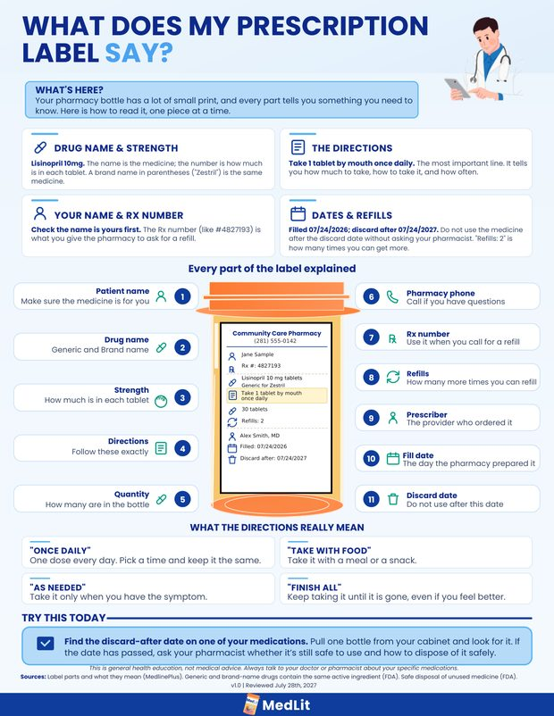

Student-led nonprofit
Understanding your own health shouldn’t be a privilege.
MedLit is a student-led nonprofit that makes health information understandable. Free workshops and free plain-language guides.
Our why
You get handed a prescription label, a lab result, an insurance letter. The print is small and the words are hard to understand. The person who could explain it has already moved on to the next patient.
So you guess. And guessing about your own health is a risk no one should have to take.
What we do
We take the documents you get handed at the pharmacy, the lab, and the insurance office. We put them in plain language. Two ways: in a room, and on one page.
-
Free workshops
45 minutes, interactive, at senior communities, libraries, and food pantries. We bring the materials and the facilitators. You bring the room and the people.
-
Free guides
One page each, in English and Spanish. Read them on your phone, print them, hand them out at the front desk.
-
Free. Always.
No fee, no trial, no first-one-free. There is no version of this that costs money, for the workshops or for the guides.
The work so far.
Counts, not estimates. We add to this after every event.
-
160
Guides handed out at Cy-Fair Helping Hands
90 in English. 70 in Spanish.
What we measure
Our first comprehension numbers arrive with our first workshops.
We test comprehension before and after every session. Every result we publish comes with its denominator. Sixteen of twenty-three, never seventy percent.
Free to read, print, and hand out.
No sign-up. No email address. No catch.
-

What Does My Prescription Label Say?
Every part of a prescription label, explained one piece at a time. Drug name, dose, directions, refills, dates.
- Format
- PDF, 1 page
- Language
- English
- Reviewed
- Licensed healthcare professional
So we teach people to read them.
45-minute interactive sessions at senior communities, libraries, and food pantries, covering how to read prescription labels, lab results, and insurance letters.
- How long
- 45 minutes, interactive.
- Where
- Senior communities, libraries, food pantries, community organizations.
- What we cover
- Prescription labels, lab results, insurance letters.
- What we bring
- The materials and the facilitators.
- What you bring
- The room and the people.
- Cost
- Free. Always.
We check the work, and we measure it.
-
Reviewed before release
One-page plain-language guides in English and Spanish, reviewed by a licensed healthcare professional before release.
-
Measured every session
We test comprehension before and after every workshop, so we can show people actually learned something.
Bring a free workshop to your space.
If you run a senior community, a library, or a community organization, we would love to visit. We handle the materials and the facilitators. You bring the room and the people. Tell us a little about your group and we’ll follow up with dates.
Email us about hosting medliterateofficial@gmail.com
We’re looking for our first volunteers.
People to run workshops, write guides, and translate them. If you can explain things clearly, or you speak a second language, there is a place for you here.
- Run workshops
- Teach a 45-minute session.
- Write guides
- Turn one confusing document into one clear page.
- Translate
- Carry a guide into another language.